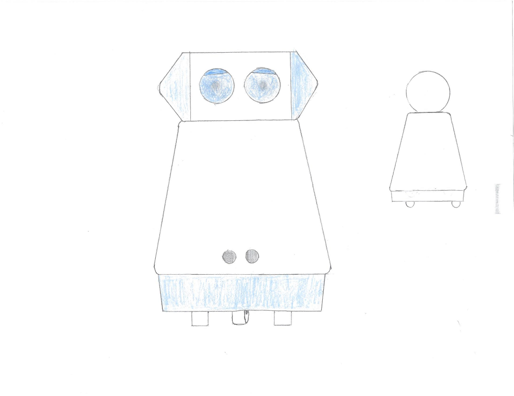
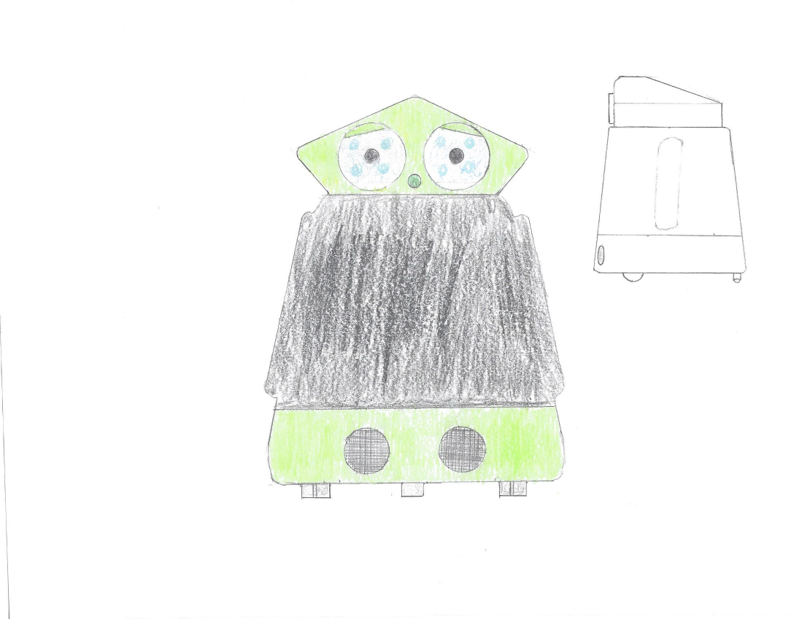

As far as I know, no diagrams exist of the internals of these designs; they were just external designs. I don't know when these designs were created. I am putting the them on the website because they look nice. Perhaps I will build something inspired by them at some point.
